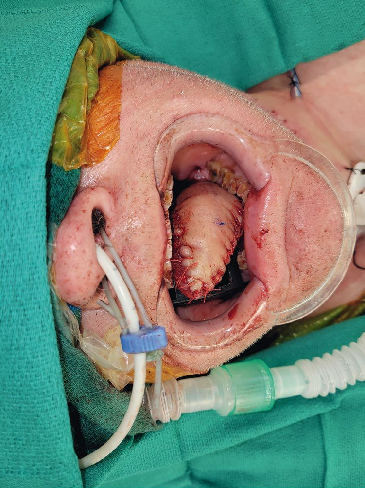

Head and Neck Cancer
Summary
- Squamous cell carcinoma is the commonest cancer of the oral cavity, pharynx and larynx, and the biggest risk factors are tobacco and alcohol [1].
- The organising principle for treatment is anatomical: oral cavity cancer is a surgical disease, while pharyngeal and laryngeal cancers are treated primarily with radiotherapy, with surgery reserved for advanced disease [1].
- This page covers oral cavity, pharyngeal, nasopharyngeal and laryngeal cancer, the size threshold that changes management, and the neck dissection that accompanies it.
- Salivary gland tumours are on their own page.
Definition
The oral cavity comprises the floor of the mouth, the anterior third of the tongue, the gingiva, the hard palate, the anterior tonsillar pillars and the lips [1].
A verrucous ulcer is a well-differentiated squamous cell carcinoma, often found on the cheek and associated with oral tobacco; it is not aggressive and rarely metastasises [1].
Pathophysiology
Erythroplakia is considered more premalignant than leukoplakia [1], the reverse of the intuition that the whiter lesion is the more dangerous one.
Nodal drainage differs by subsite, and this determines the field of treatment. Nasopharyngeal and oropharyngeal cancers drain to the posterior cervical nodes; hypopharyngeal cancer drains to the anterior cervical nodes [1].
Clinical features
The lower lip is the commonest site of oral cavity cancer, because of sun exposure [1].
Each pharyngeal subsite has a characteristic presentation [1]:
- Nasopharyngeal, nose bleeding or obstruction.
- Oropharyngeal, neck mass and sore throat.
- Hypopharyngeal, hoarseness, with early metastases.
Laryngeal cancer presents with hoarseness, aspiration, dyspnoea and dysphagia [1].
Tonsillar carcinoma is asymptomatic until large, and 80% have lymph node metastases at diagnosis [1].

Etiology
Tobacco and alcohol are the dominant risk factors across the oral cavity, pharynx and larynx [1]. Tonsillar carcinoma is associated with alcohol, tobacco and male sex, and is most often squamous [1].
Oral cavity cancer is increased in Plummer-Vinson syndrome, glossitis, cervical dysphagia from an oesophageal web, spoon-shaped nails and iron-deficiency anaemia [1].
Nasopharyngeal squamous cell carcinoma is associated with Epstein-Barr virus and with Chinese ethnicity [1].
Two benign lesions are worth separating from cancer. Papilloma is the commonest benign neoplasm of the nose and paranasal sinuses, and also the commonest benign lesion of the larynx [1]. Nasopharyngeal angiofibroma occurs in males under 20, presenting with obstruction or epistaxis, and is extremely vascular [1].
In children, lymphoma is the commonest tumour of the nasopharynx [1].
Diagnosis
Tonsillectomy is the best way to biopsy a tonsillar carcinoma, with wide resection and margins after that [1].
Nasopharyngeal angiofibroma is approached with angiography rather than biopsy, because of its vascularity [1].
Thresholds and severity
Four centimetres is the threshold that changes management across the head and neck [1].
For oral cavity cancer, modified radical neck dissection is indicated for tumours above 4 cm, clinically positive nodes, or bone invasion; postoperative radiotherapy for advanced lesions, above 4 cm, positive margins, or nodal or bone involvement [1].
For oropharyngeal and hypopharyngeal cancer, radiotherapy alone is used for tumours under 4 cm with no nodal or bone invasion; combined surgery, MRND and radiotherapy for advanced tumours above 4 cm or with bone or nodal invasion [1].
Survival is lowest for hard palate tumours, because they are hard to resect [1].
Bailey & Love gives oral cavity cancer a chapter of its own, reflecting how much of head and neck practice in the UK sits with maxillofacial and ENT rather than general surgery [3].
The principle that survives across systems is that the larynx is preserved wherever possible. Surgery is not the primary treatment for laryngeal cancer: radiotherapy is used where disease is confined to the vocal cord, and chemoradiotherapy where it extends beyond it [1].
The radiotherapy field follows the midline. Treatment is extended to the ipsilateral neck nodes, and to bilateral neck nodes if the tumour crosses the midline [1].
Where a modified radical neck dissection is performed for laryngeal cancer, the ipsilateral thyroid lobe is taken with it [1].
Treatment and Management
Oral cavity cancer is treated by wide resection with 1 cm margins [1].
Lip cancer may need flaps if more than a third of the lip is removed, and lesions along the commissure are the most aggressive [1].
Tongue cancer can still be operated on despite jaw invasion, by a commando procedure [1].
Verrucous ulcer is treated by full cheek resection with or without a flap, and needs no lymph node dissection [1].
Maxillary sinus cancer is treated by maxillectomy [1].
Nasopharyngeal carcinoma is treated with radiotherapy as primary therapy, being very sensitive, with chemoradiotherapy for advanced disease and no surgery; paediatric nasopharyngeal lymphoma is treated with chemotherapy [1].
Nasopharyngeal angiofibroma is treated by angiography and embolisation (usually of the internal maxillary artery) followed by resection [1].
Procedural interventions
Modified radical neck dissection is the nodal operation across subsites, indicated by size above 4 cm, clinically positive nodes, or bone invasion [1].
The commando procedure allows resection of tongue cancer with mandibular involvement [1], and lip reconstruction requires flap cover once more than a third of the lip has gone [1], techniques covered on the Grafts and Flaps page.
Complications
The functional complications drive the treatment choice rather than following it: preserving the larynx is the stated aim in laryngeal cancer, and radiotherapy is chosen over surgery for that reason [1].
For lip and cheek resection, the complication anticipated is cosmetic and functional loss requiring flap reconstruction [1].
Outcomes
Hard palate tumours have the lowest survival of the oral cavity subsites, because resection is difficult [1].
Hypopharyngeal cancer metastasises early [1], and tonsillar cancer has nodal metastases in 80% by diagnosis [1], both consequences of presenting late in a site that stays silent.
References
- The ABSITE Review, 2022, Ch. 19 Head and Neck
- Sabiston Textbook of Surgery, 22nd ed., Ch. 69 Plastic Surgical Considerations in Cancer Surgery
- Bailey & Love's Short Practice of Surgery, 28th ed., Ch. 53 Oral cavity cancer